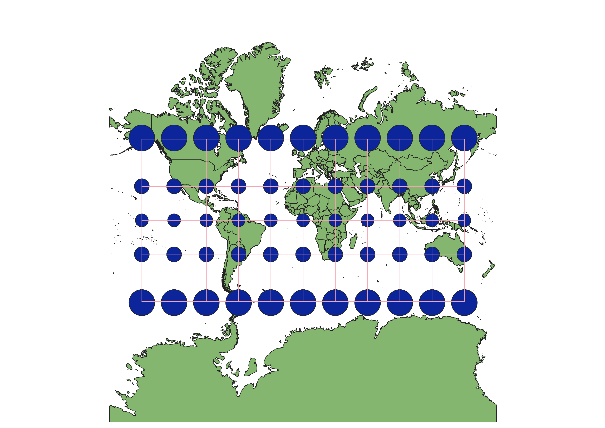
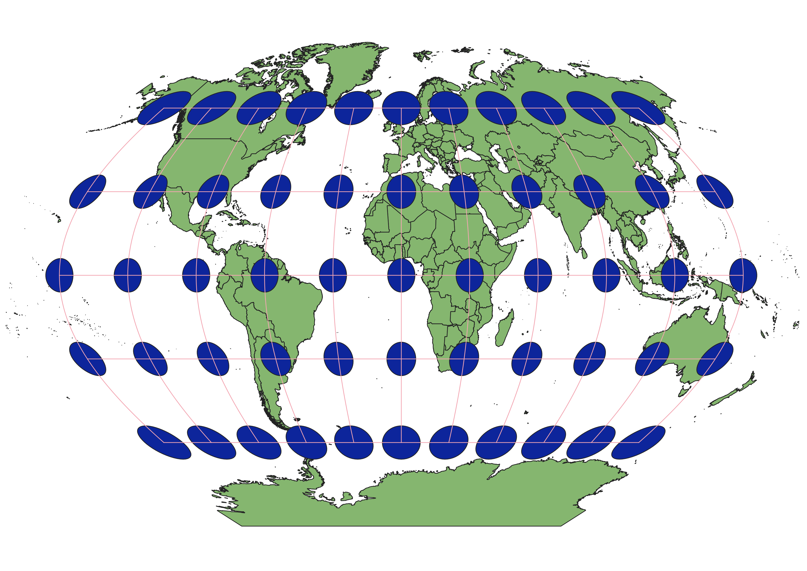
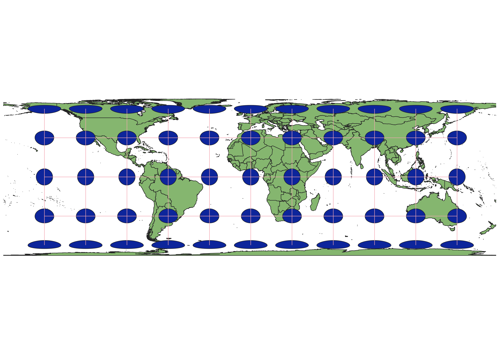
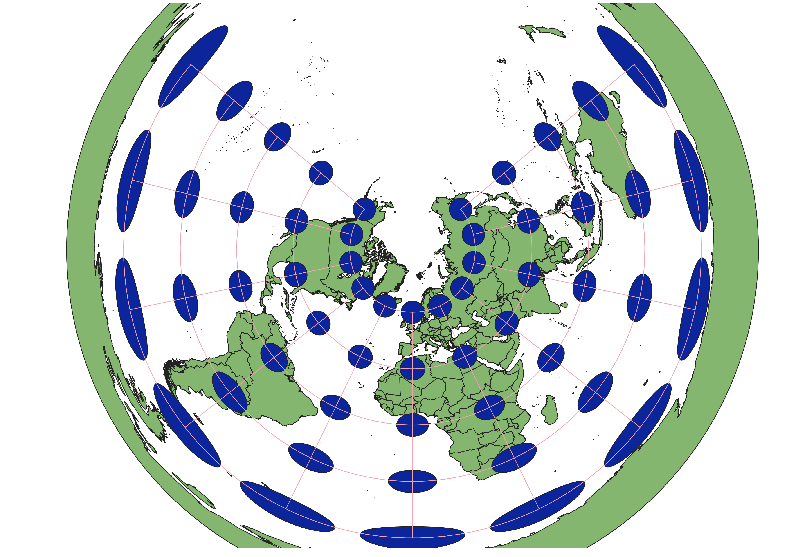
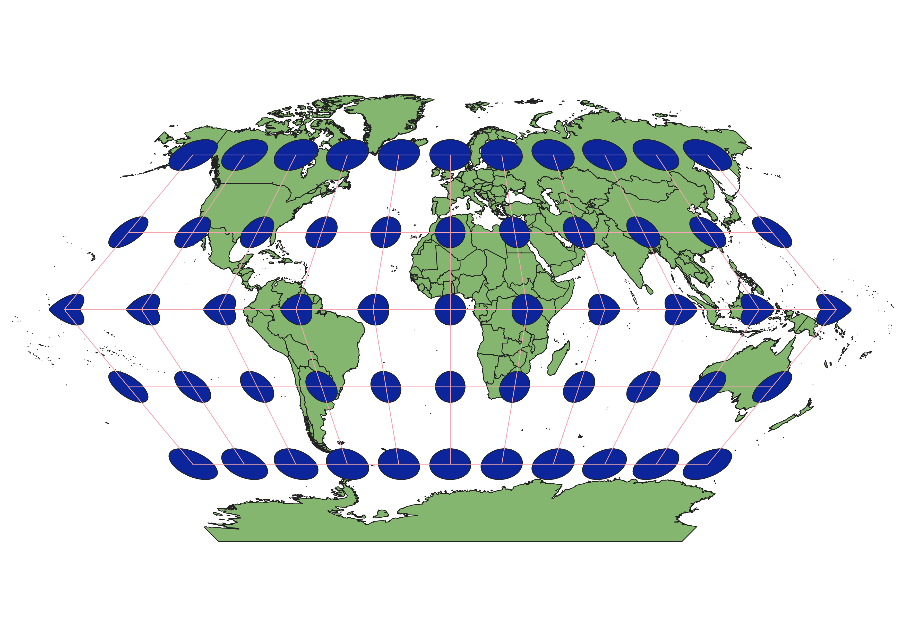

In this project I learned how to display images in different projections
Describe in your own words how you displayed the map in different projections using QGIS
When using QGIS, I used the Indicatrix Mapper and Project Coordinator Reference System to find different available projections.
Using, the search bar I would look for different EPSG and ESRI files that didn't seem to distort the original image past being able to read the map.
WGS84 Projection
This map is very easy and pleasant to read. The Tissot circles stayed relatively small but did get larger the further away from the equator that they were.

Aitoff Projection
Only the very center of the map stayed the same. Looking at the Tissot circles, they not only grew in size the further away from the middle, but also distorted into ovals themselves. This was worse at the poles.

Pseudo-Mercator Projection
I believe this is similar to, if not the, mercator map that is commonly used across the world. It's very easy to read and could be used for navigation.

Spherical Winkel 1 Projection
This map was very similar to the Psuedo-Mercator map but looked to be stretched along the longitudinal lines. It was more spherical in shape than WGS84.

Cylindrical Equal Area Projection
This stretched the map out along the latitudinal lines, into a cylindrical shape. The Tissot circles along the equator stay the same but there is severe distortion along the poles. North America for example looks twice as wide as it actually is.

Azimuthal Equidistant North Pole Projection
This map is very similar to the Conical Equidistant projection but gives a more complete look at the North Pole. It would not be useful in looking at the South Pole because of the large levels of distortion found there.

Conical Equidistant Projection
This map looks almost like a complete Azimuthal projection but lacks the complete circle to do so. There is very little distortion near the North Pole but extreme levels near Antartica.

Spherical Craster Parabolic Projection
This map made the poles look very pointy with the most distortion found at the poles and antimeridian. It looks interesting.

Spherical Eckert 1 Projection
This map has to be my favorite because it makes the equator very pointy and the overal map look like a hexagon. The level of texture is different and makes it more engaging for me.

Now, you should add the following projections on your own:
EPSG: 3857, 53018, 54034, 54027, 102016, and two additional projections that you choose.
Data used for this project
Download Natrual Earth 1:10m Cultural Vector